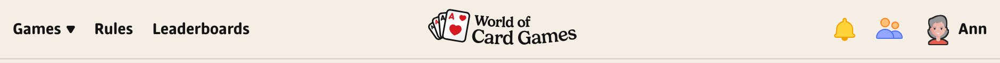
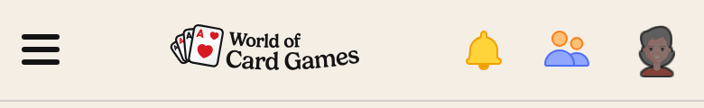
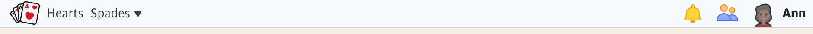
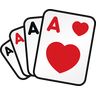
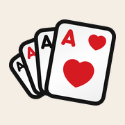
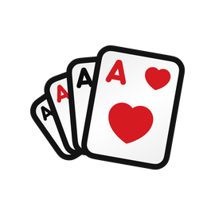
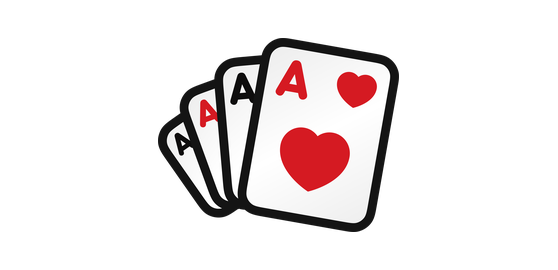
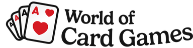
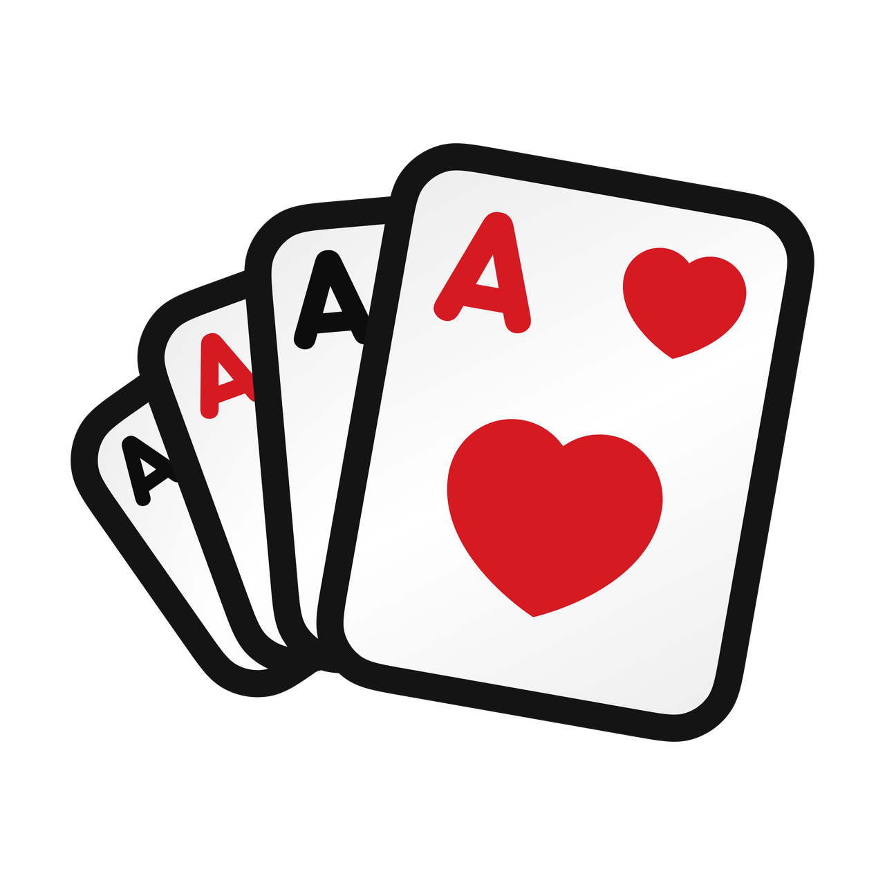
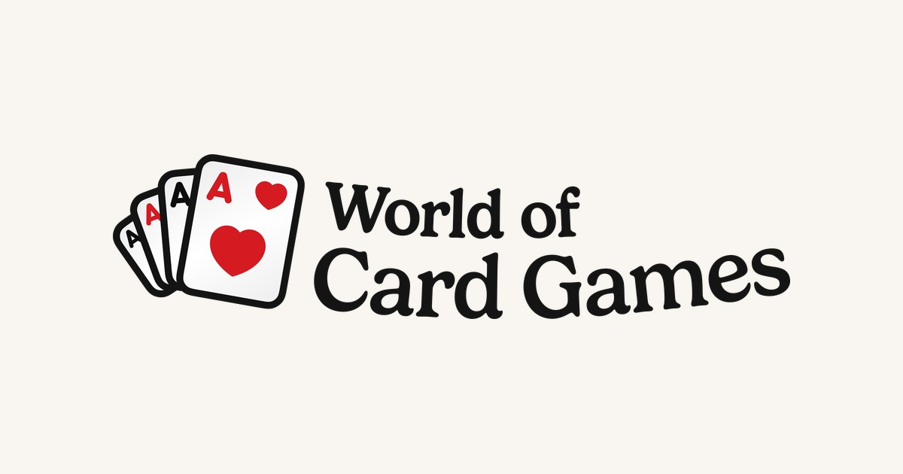

1. The top menu, the redesign, on a desktop
static/images/logo.svg through menu_bar.dust: 36px tall, lifted 7% of its height so the ink’s centre sits on the bar’s middle (the words hang low in the fan). The fan is the export’s own vector; the words are traced from the 3x PNG until an export carries them as outlines.

2. The top menu on a phone
27px tall, the same lift.

3. The top menu with the redesign flag off (the old look)
Master’s bar keeps the image at 125x32 and clips its logo box to 38px, so it shows the fan alone, as it showed the old fan.

4. The browser tab
favicon.ico (16, 24, 32, 48, 64), the new favicon.svg and favicons/favicon-16x16, 32x32, 96x96, 128, 196x196.png, all from the favicon export (the fan with the big heart grown). Chrome, Firefox and Edge take the SVG; Safari the PNGs or the ICO.

favicon-96x96.png5. A phone’s home screen
favicons/apple-touch-icon-180x180.png (new, linked in both head templates) and the old sizes 57 to 152: the fan on the band’s paper, opaque, since iOS paints a clear icon black. iOS rounds the corners itself.

Card Games6. Windows start tiles
favicons/mstile-70x70, 144x144, 150x150, 310x150, 310x310.png: the fan, transparent, on the tile colour the head templates name (#327333, unchanged).


7. The account emails
static/images/logo.png (374x96, the whole logo at the old file’s height) in the eight emails of node-user/emails/ (verify, forgot password, email changed, subscription started and cancelled, banned, ban lifted, change email), whose logo box went from 180x42 to 180x46 for the new aspect.

Hi Ann,
Welcome to World of Card Games. Press the button below to verify your email address.
8. The maintenance page
static/images/logoIcon.png (1280 square, the fan) at 160x160 in down/index.html.

We’ll be right back.9. The share image
web/public/worldofcardgames.jpg, the og:image for pages without their own (a game page uses its screenshot): the logo on the page paper at 1200x630. The old file was an illustrated green card; it is in git.

10. Every file, and where it is used
| File (in worldofcardgames/) | Size | Used by |
|---|---|---|
static/images/logo.svg | 42 KB | The top menu: menu_bar.dust draws it 125x32 at flag-off; under the redesign 36px tall (27 on a phone), lifted 7%. Preloaded by head_open_ads.dust. |
static/images/logo.png | 384x96 | The eight account emails (node-user/emails/*.dust, a 180x46 box) through logoURL in node-user, node-payments and node-periodic. |
static/images/logoIcon.png | 1280x1280 | The maintenance page (down/index.html) at 160x160. |
web/public/favicon.ico | 64x64 (16, 24, 32, 48, 64) | The browser tab and bookmarks, 16 24 32 48 64; also the desktop notification icon (Table.js). |
web/public/favicon.svg | 16 KB | The browser tab in Chrome, Firefox and Edge, which prefer the SVG (both head templates). |
web/public/favicons/favicon-16x16.png | 16x16 | The tab, linked at 16 (both head templates). |
web/public/favicons/favicon-32x32.png | 32x32 | The tab and the taskbar, linked at 32. |
web/public/favicons/favicon-96x96.png | 96x96 | Linked at 96. |
web/public/favicons/favicon-128.png | 128x128 | Linked at 128. |
web/public/favicons/favicon-196x196.png | 196x196 | Linked at 196: Android home screens. |
web/public/favicons/apple-touch-icon-57x57.png | 57x57 | iOS home screen, old sizes 57 60 72 76 114 120 144 152 (precomposed), on the band paper. |
web/public/favicons/apple-touch-icon-180x180.png | 180x180 | iOS home screen, the 180 iPhones ask for today; new, linked in both head templates. |
web/public/favicons/mstile-70x70.png | 128x128 | Windows start tiles 70 144 150 310x150 310x310, transparent on the tile colour #327333. |
web/public/worldofcardgames.jpg | 1200x630 | The share image (og:image) for pages without their own, 1200x630. |
Not touched: the game apps’ own icons (Khang’s per game), the per-game share screenshots, and the social icons in web/public (facebook-48, twitter-48, youtube-48).